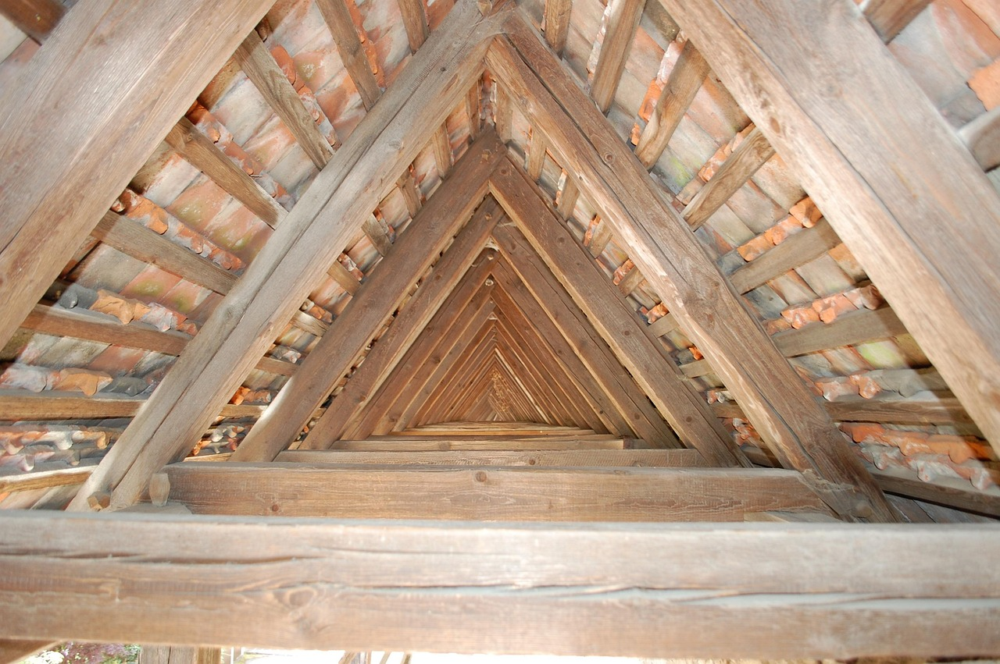
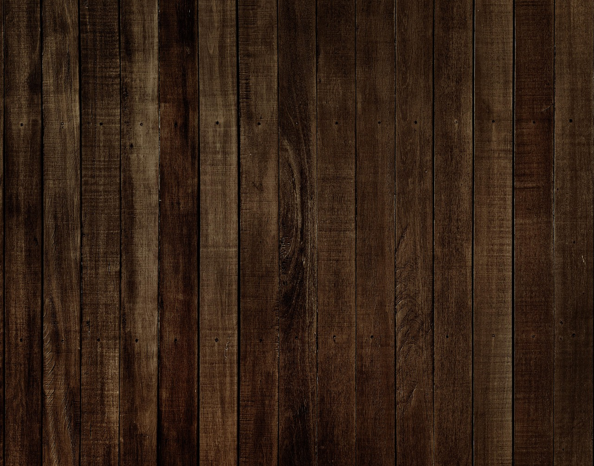

What Framing Carpentry Actually Is
Framing is building the skeleton of a structure: walls, floors, roof systems, openings, and the layout that determines whether everything later (drywall, trim, cabinets, doors, windows) will install cleanly or become a fight. It’s not decorative work. It’s structural reality.
People imagine framing as “just lifting wood and nailing it.” The truth is that the physical part is real, but the failure mode is usually layout discipline: bad measurements, sloppy lines, not checking plumb/square, or trying to go fast while ignoring what the building is telling you.



What You Spend Time Doing
Framing is repetitive execution at scale. Your day is a loop: layout → cut → assemble → set → check → brace → move to the next section. You do it in changing conditions, often on an active site, and your work has to stay consistent even when the pace accelerates.
- Layout: measuring, marking, snapping lines, locating openings, checking square and plumb.
- Assembly: building wall sections, setting headers, installing joists/rafters/trusses, sheathing surfaces.
- Material handling: staging lumber, carrying, lifting, working from ladders/scaffolds, cleanup and tool management.
- Correction: fixing mistakes before they compound (because once other trades start, fixes get expensive).
Framing rewards people who can do “simple” things correctly for hours without letting quality drift. That consistency is a trait — not a vibe.
Where the Pressure Comes From
In framing, pressure is usually a mix of time and consequences. Jobsites care about production. But “fast and wrong” doesn’t just look bad — it creates downstream chaos: doors that won’t hang, drywall that waves, trim that reveals every mistake.
You also carry real safety pressure. Power tools, heights, heavy pieces, and fatigue are constant variables. If you’re careless, framing punishes you. If you’re disciplined, it becomes a controlled system.
What Traits Actually Matter
Framing success isn’t about loving wood. It’s about tolerances — physical, mental, and environmental — and how you behave when the job is not comfortable.
- Endurance: staying functional during long stretches of physical work.
- Speed with control: moving fast without getting sloppy or reckless.
- Layout discipline: measuring and checking even when you “already know.”
- Problem tolerance: handling imperfect lumber and imperfect conditions without spiraling.
- Redo resilience: correcting issues early instead of hoping they disappear later.
Who Should Probably Avoid It
No judgment — just honesty. Framing is a poor fit if the core conditions drain you more than they sharpen you.
- You hate physical strain: ladders, lifting, kneeling, awkward positions, repetitive handling.
- You need clean/quiet environments: jobsite noise, dust, weather, mud, and chaos are normal.
- You rush and don’t re-check: framing errors compound; “close enough” becomes expensive fast.
- Redo kills motivation: fixes happen. If correction feels like failure, the job becomes misery.
Low fit doesn’t mean you’re weak. It usually means your strengths show up better in a different work style. That’s a routing problem, not a character problem.
Next Step: Get a Signal, Then Compare
If framing sounds interesting, don’t decide on mood. Use the diagnostic first, then compare against other carpentry paths. Some people are built for framing pace. Others are built for finish precision, cabinet consistency, restoration problem-solving, or furniture detail.
Run the Framing Carpentry Fit Diagnostic first. Then compare specializations from the Carpentry Hub. If carpentry isn’t the lane, go broader at the Trades Hub. Start from the homepage if you want the full map.